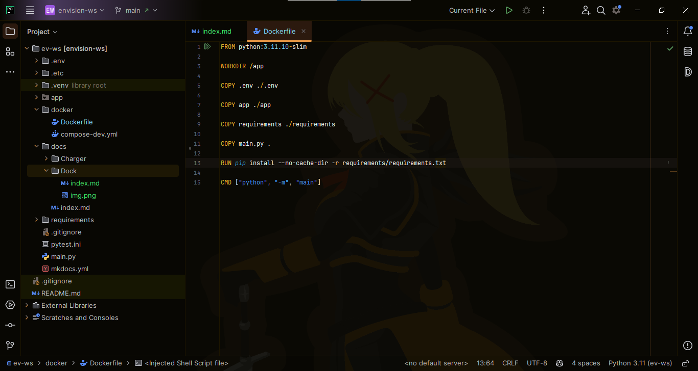
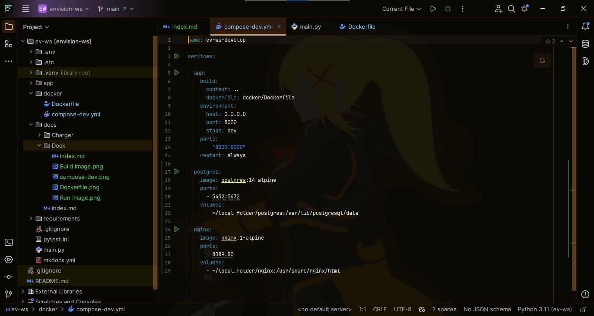

Docker / Podman
Building Docker Image
1. Image vs Container
Basically, a running instance of an image is a container.
2. Create a Dockerfile

- In this case, we put it in a docker folder.
Basically:
- FROM sets what system to use as base for the image. Ubuntu, Debian, Windows, etc. python:3.11.10-slim is just Debian with Python installed and ready-to-use.
- WORKDIR is just
cd. - COPY is just copy from host to image.
- RUN is just like running a command in a terminal.
- CMD is the command that gets executed on start of container.
3. Build Image
Run:
podman build -f docker/Dockerfile -t sample-app .
- -f flag specifies the Dockerfile to use.
- -t is the name of the image.
- The dot at the end specifies the source directory to be used by the commands in the Dockerfile. In this case, the directory where the command was executed.

4. Run Image
Run:
podman run -d localhost/sample-app

- -d flag means detached. The container will continue running even if you exit terminal.
- The container is currently 'exited' because it crashed. The environment variables are not yet set.
Using Docker Compose
Docker Compose is used to configure the building and running of images.
1. Create a Docker Compose File
Sample Compose File:

- A service is basically an app. A service can use an already built image or a project with a Dockerfile.
- For
postgresandnginxservices, we use the publicly available image. - For the
app, we have to provide values for thebuild.contextandbuild.dockerfilekeys which are similar to the ones we used in the build before. Thebuild.contextneeds..because it's relative to the compose file path.
- For
- You can specify other mappings such as ports, restart-policy, volumes, network, logging, etc.
- By default, all the services in a Compose is grouped to use the same network.
2. Run Compose
For the WebSocket Server, you can try:
podman compose -f docker/compose-dev.yml up -d

Additional Stuff
Show Running Containers
podman ps
Show Images Stored Locally
podman image ls
Run a Command on an Active Container
You can use the code below to get a terminal in the ev-ws-develop-app-1 container.
podman exec -it ev-ws-develop-app-1 bash
Show Container Logsmd
- -f means follow
- -t means add timestamp
podman logs -ft ev-ws-develop-app-1